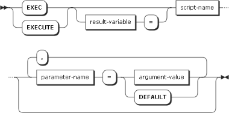

EXECUTE StatementEXECUTE
statement itself will declare the variable if it does not exist. If the script does not call RETURN,
then the return value is NULL.DECLARE PARAMETER
statement. If parameters are present in the script, then any EXECUTE statement that calls it must
provide argument values for those parameters. The exception is if the DECLARE PARAMETER statement
includes a default value. If so, then the EXECUTE statement may omit that parameter, or it may use the
special keyword DEFAULT; in both cases, the default value defined by the DECLARE PARAMETER
statement is used.
@), dollar sign ($), or
colon (:) that the return value of the script will be assigned to. The variable may be declared
beforehand, but does not need to be. The EXECUTE statement acts as a variable declaration if the
variable does not exist.DEFAULT (keyword)DEFAULT is specified instead of an argument-value, then
the parameter will use its default value. This is equivalent to omitting the parameter.EXECUTE Script2;EXECUTE @returnValue = Script2;@returnValue.EXECUTE 'My Script';EXECUTE Script2 @foo = 1, @bar = 2;@foo and @bar
refer to parameters defined using DECLARE PARAMETER inside "Script2".